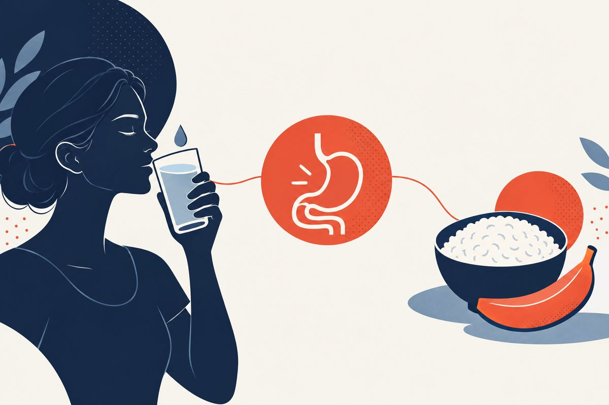

Food Poisoning Treatment in Adults: 3 Priorities for Recovery
Hydration, warning signs, and safer symptom relief. A practical guide to foodborne illness and acute gastroenteritis, with clear limits for home and video care.

What are the first priorities in adult food poisoning treatment?
Key Takeaways
- Fluid and electrolyte replacement is the first priority, not stopping every loose stool.[1][2][6]
- Norovirus often lasts 1 to 3 days; not all food poisoning follows that timeline.[3][4]
- Blood, high fever, poor fluid tolerance, very little urine, or severe pain need assessment.[1][2][3]
- Loperamide is only for selected watery diarrhea and must be avoided with certain red flags.[1][8][9]
- Antibiotics are not routine, and they may be harmful in STEC infection.[1][8][11]
- Resume food as tolerated; a prolonged restrictive diet is not required.[1][6][7]
- For suspected norovirus, avoid food handling for at least 48 hours after symptoms stop.[4][5]
What are the symptoms of food poisoning?
Food poisoning means illness after swallowing contaminated food or drink. Diarrhea, nausea, vomiting, stomach cramps, and fever are common, but the pattern depends on the cause. A meal followed by an upset stomach does not prove which food was responsible, or even that food poisoning is the diagnosis.[3][6][14]
The most useful first questions are practical: Can you keep fluids down? Are you urinating? Is there blood in the stool? Is the pain severe or focused in one spot? Hydration and warning signs matter more than identifying the exact germ at home.[1][2][11]
Food poisoning can range from a brief illness to an infection needing urgent care. A worsening or unusual symptom pattern should not be dismissed as “just something I ate.” This guide is for adults and does not provide a pediatric or pregnancy-treatment plan.[1][3][6]
Food poisoning vs. stomach bug: what is the difference?
These labels overlap. “Food poisoning” describes a route of exposure; “gastroenteritis” describes illness affecting the digestive tract. A virus such as norovirus can spread through food, contact with an infected person, or contaminated surfaces. A foodborne episode is not automatically bacterial, and a “stomach bug” is not always separate from food poisoning.[1][4][14]
Viruses, bacteria, toxins, and parasites
Viruses, bacteria, and parasites can cause infectious diarrhea. Some bacteria also produce toxins in food before it is eaten. Recent travel, sick contacts, raw or undercooked foods, untreated water, and recent antibiotic use can change what a clinician considers. Timing alone cannot reliably identify the cause.[1][3][11][14]
Tell the clinician if other people became sick after the same meal or event. Also mention recent antibiotics or a hospital stay, because not every episode is foodborne and some circumstances call for different testing.[1][11][14]
Which germs cause most adult food poisoning?
Norovirus is the leading cause of foodborne illness in the United States. Common bacterial causes include Salmonella, Campylobacter, Shiga toxin-producing E. coli (STEC), and Listeria. Some bacteria, such as Clostridium perfringens and Staphylococcus aureus, cause short illnesses mainly through toxins already formed in food. The timeline and stool character can hint at the cause, but they do not confirm it on their own.[4][22][23][24]
Different germs follow different timelines. Norovirus typically begins 12 to 48 hours after exposure and lasts 1 to 3 days. Salmonella and Campylobacter more often begin several days after exposure and can last longer. STEC illness often begins 3 to 4 days after exposure, and its most serious complication, hemolytic uremic syndrome, tends to appear about a week into the illness.[4][8][22][23]
| Pathogen | Usual onset | Common sources | Notes |
|---|---|---|---|
| Norovirus | 12 to 48 hours | Contaminated food, water, surfaces, infected people | Most common cause; brief and highly contagious |
| Salmonella | 6 hours to 6 days | Eggs, poultry, produce, undercooked food | Fever and cramps common; often self-limited |
| Campylobacter | 2 to 5 days | Undercooked poultry, unpasteurized milk | Often bloody diarrhea; antibiotics in selected cases |
| STEC (E. coli O157) | 1 to 10 days | Undercooked ground beef, produce, raw milk | Bloody diarrhea; antibiotics may raise HUS risk |
| Listeria | 1 to 4 weeks | Deli meats, soft cheeses, unpasteurized dairy | Highest risk in pregnancy and weakened immunity |
Onset ranges and sources are typical, not universal. Adapted from CDC pathogen guidance.[4][8][22][23][24]
How long does food poisoning last, and when does it start?
There is no single duration for all food poisoning. Symptoms may start within hours or only after several days, depending on the germ or toxin. The last meal you ate is often not the culprit. CDC advises recording foods and activities from the week before symptoms, rather than focusing only on dinner the night before.[3][14]
Norovirus is one specific example: symptoms usually begin 12 to 48 hours after exposure, and most people recover in 1 to 3 days. That range must not be applied to every bacterial or parasitic infection.[4]
If diarrhea is continuing beyond 48 hours, contact a clinician, especially if you are not improving. CDC lists diarrhea lasting more than 3 days as a reason to seek medical care; the ACG patient guidance uses a more cautious 48-hour threshold. Neither threshold means waiting when you have blood, dehydration, high fever, or severe pain.[2][3]
How do you treat food poisoning at home?
What should you do first?
For an otherwise stable adult who can drink and has no warning signs, the first priority is replacing lost fluid and electrolytes. Use small, frequent sips if nausea makes larger drinks difficult. Do not use symptom-suppressing medicine as a substitute for hydration or an evaluation when you are getting worse.[1][2][6]
Second, reassess the situation as the day goes on: whether you can drink, whether urine output is falling, whether dizziness is developing, and whether pain or fever is increasing. Third, choose medicines cautiously rather than automatically reaching for antibiotics or a diarrhea stopper.[1][3][6]
What should you drink? Oral rehydration solution vs. water
Oral rehydration solution, or ORS, contains glucose and electrolytes in a balance intended to support fluid absorption. IDSA recommends reduced-osmolarity ORS as first-line treatment for mild-to-moderate dehydration from acute diarrhea. A ready-to-drink product or a packet mixed with exactly the labeled amount of water avoids guesswork about the concentration.[1][2][6]
In a mild episode, water and ordinary fluids taken with food may be enough for some adults. With repeated watery stools, vomiting, or signs of dehydration, a proper ORS is preferable to relying only on plain water or very sugary drinks. Sports drinks are not the same formulation as ORS, even if they are easier to find.[1][2][4][6][7]
Swipe horizontally on a small screen to read every column.
| Option | Role | Caution |
|---|---|---|
| Oral rehydration solution | Preferred for replacing fluid and electrolytes when losses or dehydration are significant | Follow the packet or bottle instructions; do not make it extra concentrated |
| Water and ordinary fluids | Can support intake during a mild illness, especially with food | Water alone may not replace all electrolyte losses |
| Very sugary drinks, alcohol, or caffeine-heavy drinks | Not the main rehydration plan | Some can aggravate symptoms or be poor substitutes for ORS |
If you cannot retain fluids, have very little urine, feel faint, or become confused, seek urgent in-person care. Severe dehydration may require IV fluids and monitoring. People with a prescribed fluid restriction or significant heart or kidney disease should ask their clinician for an individualized plan rather than follow a one-size-fits-all volume target.[1][2][3][6]
Reduced-osmolarity oral rehydration solution is the standard formulation recommended by the World Health Organization. A typical sachet, mixed in one liter of clean water, provides glucose, sodium, potassium, chloride, and citrate in proportions that support fluid absorption. This lower-osmolarity formula reduces the need for unscheduled intravenous fluids compared with older higher-sodium solutions. Follow the packet instructions exactly, because an over-concentrated or over-diluted mixture changes how well it works.[1][26]
What should you eat after food poisoning?
Once your appetite returns and you can tolerate food, you can generally resume your usual diet. Small portions of familiar foods may be easier at first. You do not need to wait for every loose stool to stop, and prolonged fasting or a restrictive “BRAT-only” diet is not recommended as treatment.[1][6][7]
Rice, toast, crackers, or soup are reasonable foods if they appeal to you, but they are not a required cure or a complete long-term diet. Fatty foods, large amounts of simple sugar, caffeine, and sometimes dairy can make symptoms worse during recovery. Reduce what clearly bothers you rather than eliminating many foods indefinitely.[2][6][7]
Lactose intolerance can temporarily follow a diarrheal illness. If milk makes the diarrhea worse, a short pause may help, but ongoing symptoms or an inability to return to eating deserve review rather than weeks of increasingly restrictive self-treatment.[2][7]
Can you take Imodium, Pepto-Bismol, or nausea medicine?
Loperamide: only for selected watery diarrhea
Loperamide can reduce stool frequency in an immunocompetent adult with acute watery diarrhea after hydration has been addressed. Do not use it for bloody or black stools, diarrhea with fever, or suspected Shiga toxin-producing E. coli. Get advice if you have marked abdominal swelling, significant illness, or possible antibiotic-associated diarrhea.[1][2][8][9]
Follow the actual product label. For the cited US 2 mg Imodium A-D caplets, the adult OTC maximum is four caplets in 24 hours, or 8 mg. The label says to stop and ask a doctor if diarrhea lasts more than 2 days, worsens, or abdominal swelling develops. Taking more than directed can cause serious heart problems or death. Prescription limits should not be substituted for the OTC label.[9]
Bismuth subsalicylate: check salicylate risks
Bismuth subsalicylate may help some adults with uncomplicated diarrhea, but it contains a salicylate. Avoid it with an aspirin/salicylate allergy, bleeding problems, or bloody or black stools; check with a clinician or pharmacist if you take a blood thinner or another salicylate product. Do not exceed the product directions or continue beyond 2 days without advice.[6][10]
Bismuth can harmlessly darken the tongue or stool, but do not automatically attribute black, tarry stool or other bleeding symptoms to a medicine. When the cause is uncertain or you feel unwell, seek assessment.[10]
Swipe horizontally on a small screen to read every column.
| Option | Possible role | When not to self-treat |
|---|---|---|
| Loperamide | Short-term relief of selected watery diarrhea | Blood, black stools, fever, suspected STEC, worsening illness, or abdominal swelling |
| Bismuth subsalicylate | Short-term relief in suitable adults | Salicylate allergy, bleeding concerns, interacting medicines, or red flags |
| Prescription antiemetic | A clinician may use it to support oral hydration | Do not use it to delay care for severe pain, dehydration, or ongoing inability to drink |
The cautions above come from guidance and product labeling; they are not a prescription for combining medicines.[1][9][10][12]
Ondansetron: a clinician decision, not a home-dosing template
A clinician may consider an antiemetic such as ondansetron when vomiting interferes with oral hydration. Use for gastroenteritis is off-label relative to the cited US ondansetron label. Heart-rhythm history, electrolyte losses, and other medicines matter: the label warns about QT prolongation, and it advises avoiding use in congenital long-QT syndrome. This guide does not provide a self-start dose.[1][12][15]
Adult evidence also needs careful interpretation. One randomized gastroenteritis trial studied a special bimodal-release ondansetron formulation, not ordinary immediate-release tablets. Its results should not be used as a dosing instruction for a different product.[15]
Do you need antibiotics for food poisoning?
Usually not for a mild, uncomplicated episode. Antibiotics do not treat norovirus, and IDSA does not recommend empiric antibiotics for most acute watery diarrhea without recent international travel. Some bacterial or parasitic infections do need targeted treatment, but the decision depends on severity, risk factors, exposure history, and sometimes test results.[1][2][4][11]
Bloody diarrhea is not a reason to start leftover antibiotics. Shiga toxin-producing E. coli, or STEC, is a key exception: antibiotics and antimotility medicines can increase the risk of hemolytic uremic syndrome, a serious complication involving the kidneys and blood. Seek assessment instead of guessing the antibiotic.[1][8][11]
Antibiotic choice can also depend on travel history and resistance patterns. This page deliberately avoids a universal antibiotic regimen for “food poisoning,” because that label does not establish the pathogen or whether an antibiotic is appropriate.[1][11]
When are antibiotics actually used?
Most adults with food poisoning do not need antibiotics. ACG and IDSA guidance reserve antibiotics for specific situations: severe or high-volume bloody diarrhea, fever with systemic illness, illness in a person with weakened immunity or certain implanted devices, selected travel-associated infections, and confirmed pathogens where treatment shortens illness or reduces spread. Nontyphoidal Salmonella usually does not require antibiotics in an otherwise healthy adult, and Campylobacter is treated only in selected cases. This decision requires identifying the organism or the person's risk, not just the label food poisoning.[16][18][19]
Because routine antibiotics are often unnecessary and can be harmful, this guide does not list a default antibiotic regimen. Travel history, resistance patterns, and the individual's health all change the choice. It is a clinician decision made after assessment, not a self-treatment template.[16][19]
Antibiotics can make some infections worse
For Shiga toxin-producing E. coli (STEC) infection, antibiotics are generally avoided. A landmark study found a higher risk of hemolytic uremic syndrome, a serious kidney complication, in children who received antibiotics during E. coli O157:H7 infection. Bloody diarrhea without fever should raise this concern and argues against casual antibiotic use.[8][17]
Antibiotics are also the main trigger for Clostridioides difficile (C. diff) colitis, which can begin during or after a course of antibiotics and cause severe diarrhea. Anyone who develops new or worsening diarrhea during or after antibiotics should tell their clinician rather than assume it is the original foodborne illness.[20][25]
What is the treatment for norovirus?
For most adults, treatment is supportive: replace fluids, rest, and seek help when dehydration or other concerning symptoms develop. Antibiotics do not treat norovirus. The usual 1-to-3-day recovery period describes the common course, not a reason to ignore severe symptoms within that period.[1][4][6]
Preventing spread is part of care. Use soap and water for handwashing, and stay home while sick and for 48 hours after symptoms stop. Do not prepare food or care for others during that interval. A person can still shed virus after feeling better, so hand hygiene remains important afterward.[4][5]
Are probiotics necessary?
They are not a required part of this plan. A 2020 Cochrane review found uncertainty about shortening acute infectious diarrhea, and most participants were children rather than adults. That does not support promising that an adult probiotic will reliably shorten a food-poisoning episode. Discuss supplements before use if you are immunocompromised or seriously ill.[6][13]
When should you go to the ER or seek urgent care?
Seek emergency help now for confusion, collapse, severe weakness with inability to stand safely, severe or rigid abdominal pain, trouble breathing, or neurological symptoms such as difficulty swallowing or new weakness after suspected food poisoning. Do not wait for a telehealth appointment when the symptoms suggest a serious complication.[1][6][11]
Get prompt in-person medical advice for bloody or black, tarry stools; fever over 102°F; repeated vomiting that prevents drinking; very little urine; or dizziness on standing. The CDC also recommends evaluation for diarrhea lasting more than 3 days, while ACG advises contacting a clinician when diarrhea lasts beyond 48 hours. Worsening symptoms override either time threshold.[2][3]
Swipe horizontally on a small screen to read every column.
| Pattern | Appropriate next step | Why |
|---|---|---|
| Alert, able to drink, mild watery diarrhea, no red flags | Home hydration plus clinician/pharmacist advice as needed | A short-lived uncomplicated illness may improve with supportive care |
| Blood, high fever, worsening symptoms, persistent diarrhea, or poor fluid tolerance | Prompt in-person assessment | Examination, stool testing, or laboratory evaluation may be needed |
| Confusion, collapse, severe dehydration, severe focal/rigid abdominal pain, or neurological symptoms | Emergency evaluation | May need urgent treatment, IV fluids, or assessment for another diagnosis |
Older adults, people with weakened immune systems, and people with significant underlying disease should seek advice earlier. If pregnant, contact your obstetric or in-person care team rather than use this adult self-care guide as a treatment plan. This does not expand TeleDirectMD's pregnancy-care scope.[1][3][6]
When do you need stool tests or blood tests?
Mild acute diarrhea that resolves quickly often needs no laboratory testing. Stool tests become more relevant with blood or mucus, fever, severe abdominal tenderness, suspected sepsis, a possible outbreak, important travel exposures, or persistent symptoms. Blood tests may help assess electrolyte loss and kidney function when dehydration is significant.[1][2][11]
Tell the clinician about recent antibiotics, hospitalization, or healthcare exposure, which can raise concern for C. difficile. A symptom-only video visit cannot replace indicated stool tests, vital signs, or an abdominal examination. Persistent diarrhea is not a reason to keep repeating short courses of symptom medicine without reassessment.[1][2][11]
Is food poisoning contagious, and when can you return to work?
Sometimes. Illness from a toxin already in food is different from an infection that can spread between people. Norovirus is highly contagious and can spread through infected people, food, and contaminated surfaces. Until the cause is clearer, careful bathroom and food hygiene is sensible.[1][4][5]
For suspected norovirus, CDC advises staying home and avoiding food preparation or care of others until at least 48 hours after symptoms stop. Food-service, healthcare, childcare, and other workplaces may have stricter rules or require public-health clearance for particular infections. Follow those rules rather than assuming one blanket return-to-work interval applies to every pathogen.[1][4][5]
How do you prevent spread and report suspected food poisoning?
Wash hands with soap and water for at least 20 seconds, especially after using the bathroom and before preparing or eating food. Hand sanitizer alone is not a reliable substitute for handwashing against norovirus. Clean vomit or diarrhea contamination promptly while wearing gloves, then use an EPA-registered disinfectant effective against norovirus according to its label.[5]
Food safety still matters after the illness: separate raw meat and seafood from ready-to-eat foods, wash produce and utensils, cook foods properly, and refrigerate perishables promptly. Avoid serving suspect leftovers to someone else. Check official recall information when a particular food is implicated.[6]
Report suspected food poisoning to your local or state health department, especially if several people became sick after the same meal. Save receipts, packaging details, and a list of foods eaten during the previous week. Ask the health department what to do with any remaining food rather than tasting it again.[14]
Clean, separate, cook, and chill
CDC organizes food-safety prevention around four steps. Clean hands, surfaces, and produce. Separate raw meat, poultry, seafood, and eggs from foods that will not be cooked. Cook to a safe internal temperature measured with a food thermometer. Chill perishable food promptly, and do not leave food between 40°F and 140°F, the temperature danger zone, for more than two hours (one hour when it is hot outside).[21]
Certain foods carry higher risk, and some people are more vulnerable. Soft cheeses, deli meats, unpasteurized milk, and raw or undercooked meat, poultry, seafood, and eggs are common sources. Pregnant people, older adults, and those with weakened immunity face a higher risk of serious infection, especially from Listeria, and should be especially careful with high-risk foods and with reheating to steaming hot.[24]
Can telehealth help with food poisoning or gastroenteritis?
A stable adult with uncomplicated watery diarrhea or vomiting, who can drink and has no red flags, may begin with a video consultation or an in-person primary-care visit. The useful tasks are reviewing symptoms, hydration, medicines, exposures, and the threshold for further care. This is a care-routing recommendation, not a claim that remote examination can rule out every dangerous cause.
TeleDirectMD explicitly lists viral gastroenteritis care. That service match does not mean every case of food poisoning is appropriate for online treatment: severe dehydration, bloody diarrhea, high fever, focal pain, suspected C. difficile, and cases needing stool studies or IV fluids belong in an appropriate in-person setting. Do not delay urgent care to obtain an online prescription.
Related resources: viral gastroenteritis care scope, traveler's diarrhea care scope, and the cyclosporiasis guide for a different cause of prolonged diarrheal illness. These links do not identify the cause of your current symptoms.
Frequently Asked Questions
References
- Shane AL, Mody RK, Crump JA, et al. 2017 Infectious Diseases Society of America Clinical Practice Guidelines for the Diagnosis and Management of Infectious Diarrhea. Clinical infectious diseases : an official publication of the Infectious Diseases Society of America. 2017;65(12):e45-e80. https://pubmed.ncbi.nlm.nih.gov/29053792/
- American College of Gastroenterology. Diarrheal Diseases: Acute and Chronic. Accessed October 1, 2026. https://gi.org/topics/diarrhea-acute-and-chronic/
- Centers for Disease Control and Prevention. Food Poisoning Symptoms. Accessed October 1, 2026. https://www.cdc.gov/food-safety/signs-symptoms/index.html
- Centers for Disease Control and Prevention. About Norovirus. Accessed October 1, 2026. https://www.cdc.gov/norovirus/about/index.html
- Centers for Disease Control and Prevention. How to Prevent Norovirus. Accessed October 1, 2026. https://www.cdc.gov/norovirus/prevention/index.html
- National Institute of Diabetes and Digestive and Kidney Diseases. Treatment for Food Poisoning. Last reviewed June 2019. Accessed October 1, 2026. https://www.niddk.nih.gov/health-information/digestive-diseases/food-poisoning/treatment
- National Institute of Diabetes and Digestive and Kidney Diseases. Eating, Diet, and Nutrition for Food Poisoning. Last reviewed June 2019. Accessed October 1, 2026. https://www.niddk.nih.gov/health-information/digestive-diseases/food-poisoning/eating-diet-nutrition
- Centers for Disease Control and Prevention. Treatment of E. coli Infection. May 14, 2024. https://www.cdc.gov/ecoli/treatment/index.html
- DailyMed. IMODIUM A-D: loperamide hydrochloride 2 mg caplets. Drug Facts. Accessed October 1, 2026. https://dailymed.nlm.nih.gov/dailymed/drugInfo.cfm?setid=01da76d0-1979-4c45-9d39-c72ae4e4ffe2
- DailyMed. PEPTO-BISMOL CHERRY: bismuth subsalicylate suspension. Drug Facts. Accessed October 1, 2026. https://dailymed.nlm.nih.gov/dailymed/drugInfo.cfm?setid=67382f40-edbd-2be6-e053-2a91aa0a6700
- DuPont HL. Acute infectious diarrhea in immunocompetent adults. The New England journal of medicine. 2014;370(16):1532-40. https://pubmed.ncbi.nlm.nih.gov/24738670/
- DailyMed. Ondansetron oral solution: prescribing information. Accessed October 1, 2026. https://www.dailymed.nlm.nih.gov/dailymed/fda/fdaDrugXsl.cfm?setid=b7dac63f-556b-4965-ae4e-51330a79ab47&type=display
- Collinson S, Deans A, Padua-Zamora A, et al. Probiotics for treating acute infectious diarrhoea. The Cochrane database of systematic reviews. 2020;12(12):CD003048. https://pubmed.ncbi.nlm.nih.gov/33295643/
- Centers for Disease Control and Prevention. What to Do if You Think You Have Food Poisoning. Accessed October 1, 2026. https://www.cdc.gov/foodborne-outbreaks/what-to-do/index.html
- Silverman RA, House SL, Meltzer AC, et al. Bimodal Release Ondansetron for Acute Gastroenteritis Among Adolescents and Adults: A Randomized Clinical Trial. JAMA network open. 2019;2(11):e1914988. https://pubmed.ncbi.nlm.nih.gov/31702802/
- Riddle MS, DuPont HL, Connor BA. ACG Clinical Guideline: Diagnosis, Treatment, and Prevention of Acute Diarrheal Infections in Adults. The American journal of gastroenterology. 2016;111(5):602-22. https://pubmed.ncbi.nlm.nih.gov/27068718/
- Wong CS, Jelacic S, Habeeb RL, Watkins SL, Tarr PI. The risk of the hemolytic-uremic syndrome after antibiotic treatment of Escherichia coli O157:H7 infections. The New England journal of medicine. 2000;342(26):1930-6. https://pubmed.ncbi.nlm.nih.gov/10874060/
- Barr W, Smith A. Acute diarrhea in adults. American family physician. 2014;89(3):180-9. https://pubmed.ncbi.nlm.nih.gov/24506120/
- Guerrant RL, Van Gilder T, Steiner TS, Thielman NM, Slutsker L, et al. Practice guidelines for the management of infectious diarrhea. Clinical infectious diseases. 2001;32(3):331-51. https://pubmed.ncbi.nlm.nih.gov/11170940/
- McDonald LC, Gerding DN, Johnson S, Bakken JS, Carroll KC, et al. Clinical Practice Guidelines for Clostridium difficile Infection in Adults and Children: 2017 Update by the Infectious Diseases Society of America (IDSA) and Society for Healthcare Epidemiology of America (SHEA). Clinical infectious diseases. 2018;66(7):e1-e48. https://pubmed.ncbi.nlm.nih.gov/29462280/
- Centers for Disease Control and Prevention. About Four Steps to Food Safety. Accessed October 3, 2026. https://www.cdc.gov/food-safety/prevention/index.html
- Centers for Disease Control and Prevention. About Salmonella Infection. Accessed October 9, 2026. https://www.cdc.gov/salmonella/about/index.html
- Centers for Disease Control and Prevention. About Campylobacter Infection. Accessed October 3, 2026. https://www.cdc.gov/campylobacter/about/index.html
- Centers for Disease Control and Prevention. About Listeria Infection. Accessed October 3, 2026. https://www.cdc.gov/listeria/about/index.html
- Centers for Disease Control and Prevention. About C. diff. Accessed October 3, 2026. https://www.cdc.gov/c-diff/about/index.html
- World Health Organization. Oral Rehydration Salts: Production of the new ORS. Accessed October 3, 2026. https://iris.who.int/bitstream/handle/10665/69227/1/WHO_FCH_CAH_06.1.pdf
Sources checked October 3, 2026. Older guidelines and trials remain visible by date and are interpreted alongside current CDC and product-label guidance.
This health guides library is published for educational purposes only. It does not constitute medical advice and is not a substitute for evaluation by a licensed clinician. Always consult a qualified healthcare provider about any medical concern. All articles are reviewed by Parth Bhavsar, MD, and cite peer-reviewed sources where possible.